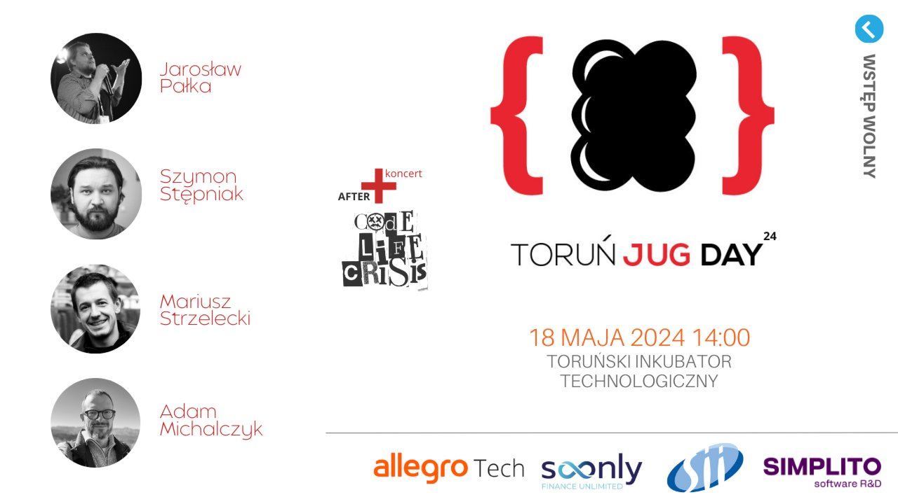

Niezapomniane przygody w krainie alokacji pamięci w JVM
Jarek Pałka
10 lat Toruń JUG
Powrót do całodniowej formuły: cztery prelekcje, networking i muzyczne after-party z okazji dziesięciolecia naszej społeczności.

Na jubileuszowej scenie pojawili się czterej prelegenci z tematami od działania JVM i ewolucji Javy po zwinność oraz budowę inteligentnego domu.
Jarek Pałka
Adam Michalczyk
Mariusz Strzelecki
Szymon Stępniak
Po części merytorycznej uczestnicy zostali na miejscu na urodzinowym after-party, planowanym – przy dobrej pogodzie – na dachu budynku, ponad siedem pięter nad ziemią. Wieczór rozpoczął koncert zespołu Code Life Crisis, stworzonego przez członków javowej społeczności i zaprzyjaźnionego front-endowca.
W programie znalazł się także poczęstunek, kawa, herbata, networking i upominki dla uczestników. Wstęp na całe wydarzenie był bezpłatny.